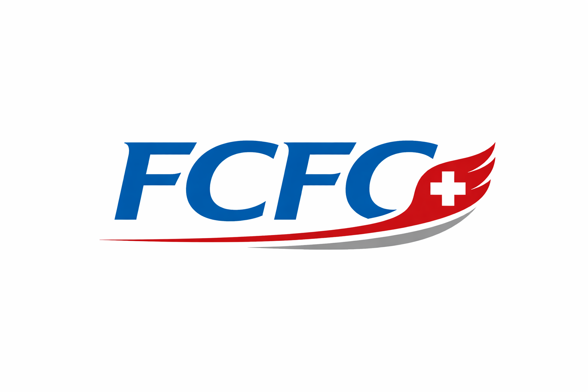

CTRM systems
We design and implement commodity trading & risk management systems from scratch, or fix ones that no longer fit how your desk actually trades.

FC Finance Consulting GmbHWe design and implement commodity trading & risk management systems from scratch, or fix ones that no longer fit how your desk actually trades.
From deal capture to settlement — we build the operational backbone that keeps physical and financial positions moving without breaking.
Regulatory reporting and compliance advisory for commodity trading operations, so audits don't become fire drills.
We open new markets and counterparties — structuring trade finance with banking partners, securing corporate accreditation with buyers, and coordinating the logistics that get a first shipment moving.
West Africa desk → Asia, Türkiye & Caspian desk → Trade finance & banking →We help commodity traders, financiers and investors enter Nigeria and Ghana: preparing the counterparty, KYC and financing work that state agencies and banks expect, and staying with the deal until the first cargo moves.
Support through NNPC's counterparty registration, KYC and tender processes for crude oil and refined product offtake, and alignment of contract terms with your trading and operations setup.
Structuring and preparing financing requests to the African Export-Import Bank — prepayment, pre-export and trade finance facilities — together with the documentation and compliance package the bank requires.
Engagement with the ministry on the policy, permitting and approval framework that governs mineral production and trade.
Guidance on GoldBod licensing for buyers, aggregators and service providers, and on operating within its centralised, traceable gold trading system.
Introductions, due diligence and supply agreements with Ghanaian gold aggregators and traders such as Bawa Rock, IB Impex and Afrimex Gold — with traceability and compliance built in from the start.
Working with banks such as Stanbic Bank Ghana and Zenith Bank Ghana on account opening, letters of credit, FX and commodity financing for gold and mineral trade flows.
Planning a transaction in Nigeria or Ghana? Write to us.
We support traders and suppliers in building working relationships with refiners, national oil companies and petrochemical producers from India to Türkiye and Azerbaijan: counterparty onboarding, tender participation and the operational setup behind term and spot supply.
Supporting crude and feedstock suppliers in onboarding with Reliance, operator of the Jamnagar refining complex — commercial terms, vetting and the operational setup for regular deliveries.
Preparing suppliers for the crude and product tenders of India's state refiners — Indian Oil Corporation, Hindustan Petroleum and Bharat Petroleum: vendor registration, bid documentation and post-award operations.
Engagement with PETRONAS and its trading arm PETCO: counterparty registration and KYC, participation in crude and product tenders, and alignment of contracts, credit and operations with your trading desk.
Preparing suppliers for Pertamina Patra Niaga's crude and refined product import tenders — registration, bid documentation, and the logistics and quality requirements of delivery into Indonesia.
Supporting naphtha, LPG and other feedstock supply to Indonesia's largest petrochemical producer, from commercial terms and vetting to shipment scheduling.
Engagement with Türkiye's refiners — the SOCAR STAR refinery in Aliağa and Tüpraş — on crude and feedstock supply, product offtake, counterparty approval and delivery logistics.
Working with the Nakkaş group across its energy businesses — storage terminals, fuel retail and aviation fuel — on product supply, storage and distribution arrangements.
Engagement with the State Oil Company of Azerbaijan Republic on crude and product offtake, counterparty registration and the documentation, financing and logistics behind Caspian supply.
Looking to supply or trade with refiners in Asia, Türkiye or the Caspian? Write to us.
A transaction only moves once the bank is comfortable with it. We prepare the KYC, credit and transaction files that trade finance banks expect, and coordinate with them on accounts, letters of credit, guarantees and structured financing for physical commodity flows.
Geneva-based commodity trade finance bank: documentary credits, transactional and structured financing for trading companies.
Swiss banking and trade finance for commodity flows connected to the Middle East and North Africa.
Trade and commodity finance, guarantees and payment flows through RBI's Vienna head office and its regional network.
Trade finance and corporate banking in Dubai for transactions linking the Gulf with Africa and Asia.
Need a bank for your next transaction? Write to us.
Twenty-plus years across physical and financial commodity trading operations — from vertically integrated supply chains to two commodity trading & risk management systems built from the ground up. We work close to the trade desk: operations, systems, and the regulatory reality around both.
Short, AI-assisted notes on commodity markets, trading technology, financing, logistics, and CTRM — refreshed automatically.